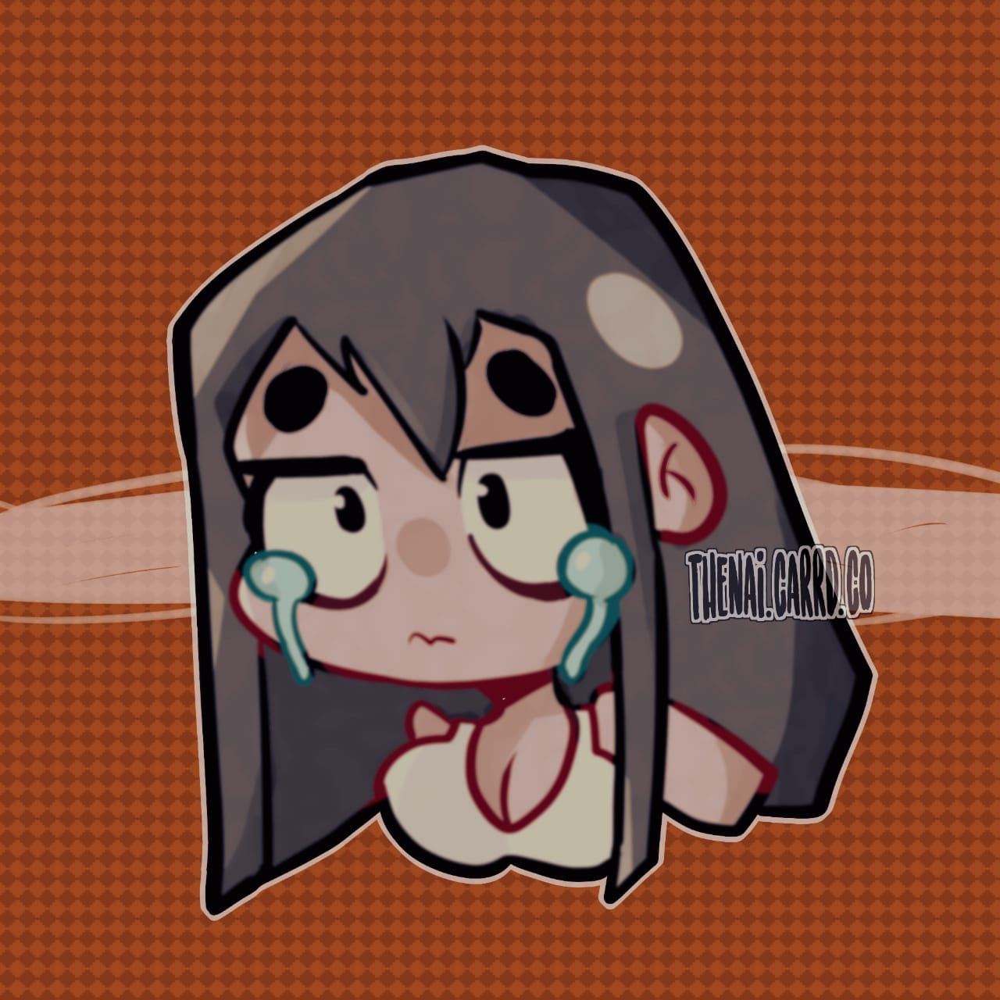

Nainita es el proyecto personal de una artista independiente. La labor principal de Nainita es servir de medio para encontrar la felicidad y la satisfacción personal a través de sus obras. Es una artista autodidacta de gran trayectoria, cuenta con más de 5 años de experiencia y ha participado en diversos concursos de arte organizados por devianart. Actualmente radica en Paris y se encuentra realizando obras de autoria propia y en colaboraciones de la comunidad europea de artistas .
La mayor pasion de Nainita es el dibujo y ahora se enfoca principalmente en el estilo cartoon, aunque tiene influencia de diversas corrientes artisticas.
Desde niña se dedico a darle vida a personajes fantásticos y comenzo a dibujar el cuerpo humano hoy realiza retratos en su estilo propio y personal.